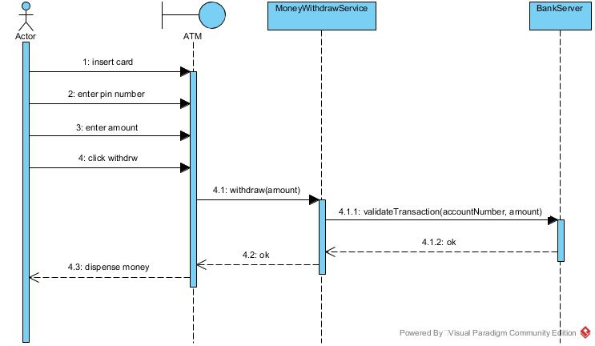
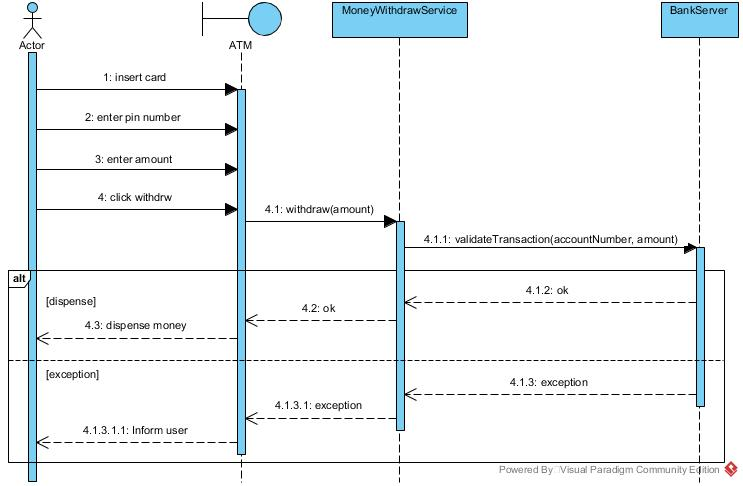
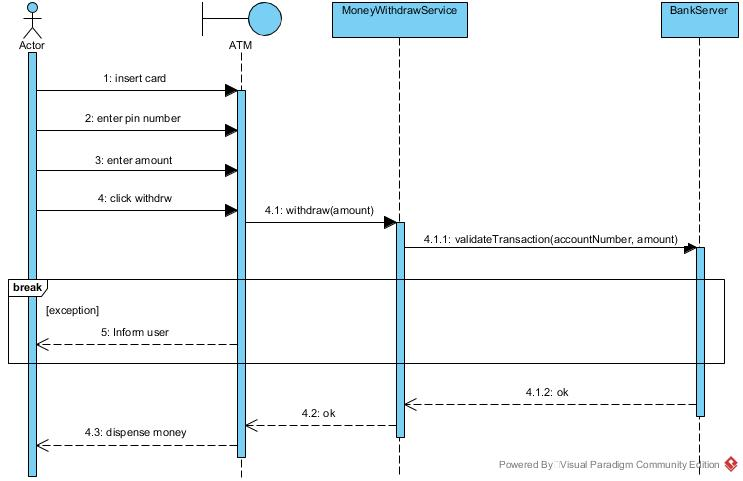

UML provides neither notation to model exception handling in sequence diagrams nor any reasoning why it is absent. Some clumsy approaches to model try-catch blocks are by utilizing combined fragments - alt (alternatives) and breaks, while adding stereotypes for reply messages representing thrown exceptions. There are several proposed notations for exception handling. 1
After searching for quite a while on how to model exception handling in a UML Sequence Diagram I found two ways to represent exception handling in a UML Sequence Diagram. They both use interaction operators, alt and break.
ATM example
I'll describe both methods using a classical example: withdraw money from an ATM when the balance is too low.
Happy flow
Let's start with the happy flow. The customer enters the data, the ATM calls a service, which calls the bank's server. The server confirms the withdrawal is approved and, the service passes this on to the ATM's UI and the ATM dispenses the money.

Alt
An alternative interaction operator represents the logic equivalent of an if-then-else statement. Only one of the offered alternatives runs on any pass through the interaction. However, as for any operand, the selected operand in the alternative structure runs only if the guard condition tests true. If there is no guard, the operand always runs when it is selected. The else clause of the alternative combined fragment runs when no other option is selected. 2
Let's take a look when the situation when something happens, what causes the ATM to decline de withdrawal. Using an alt interaction operator, it would look something like this:

This looks nice, for a small diagram, but once the diagram starts to grow and you get a lot of nested alt interaction operations, you might start to loose the overview.
Break
The break interaction operator is similar to the break mechanism in other programming languages. When the guard condition is true , the current interaction run is abandoned and the clause in the break interaction operand runs. 2
Let's take a look when the situation when something happens, what causes the ATM to decline de withdrawal. Using a break interaction operator, it would look something like this:

In this example the exception isn't caught until it enters the UI, in this case the ATM. What I like about this way of displaying exception handling is that it makes the diagram much less cluttered. I think it even makes things better, because you can see where a sequence stops when an exception occurs. This is ofcourse a very simple example, and you can have a lot more interaction in the break interaction operator, like logging or transaction handling.
Conclusion
As always, the best method depends on the scenario. But for "simple" exception handling, I think a break is a better way to represent it, then alt.